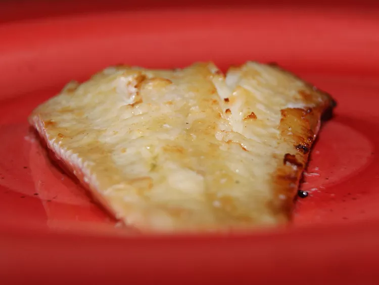

Recipe for Torsk

Description
Torsk (name for Scandinavian Cod) is a Scandinavian dish of poached and broiled cod with butter.
This recipe uses frozen fish; defrosting is not necessary.
Ingredients
- 6 ounces of fillet of cod
- 1 cup of white sugar
- 2 tablespoons of salt
- 6 cups of water (or more as needed)
- 1 1/2 cups of butter, melted
- A dash of paprika
Steps
- Preheat the broiler. Lightly grease a cookie sheet.
- Mix together water, sugar, and salt in a large saucepan.
- Add fillets to water mixture; add more water to fully submerge fillets if needed.
- Bring water to a boil over medium-high heat.
- Boil for 3 to 5 minutes.
- Remove fillets from water and blot dry on paper towels.
- Brush with 6 tablespoons melted butter; sprinkle with paprika.
- Broil in the preheated broiler until fillets are golden brown, 8 to 10 minutes per inch of thickness.
- Serve with remaining melted butter.